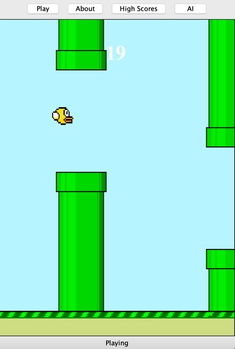

Projects
Find the source for all of my projects on GitHub on the "FindMe" page.Florpy Blord

Florpy Blord is a remake of the popular 2013 game "Floppy Bird," made for my final project of CIS 120: Programming Languages and Techniques II. I created it using Java Swing, with art from PixelArtMaker. In addition to the normal game mode, there is also an option to let an AI play, which is a recursive algorithm that predicts whether the bird will hit anything if it jumps, and plays accordingly.